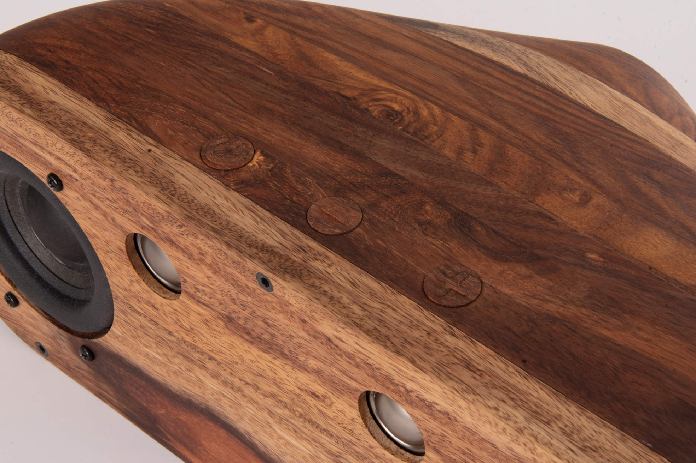
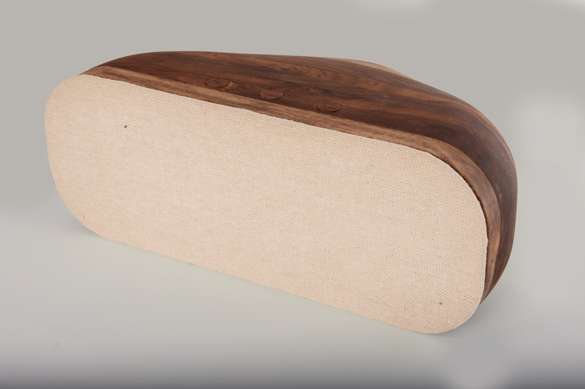
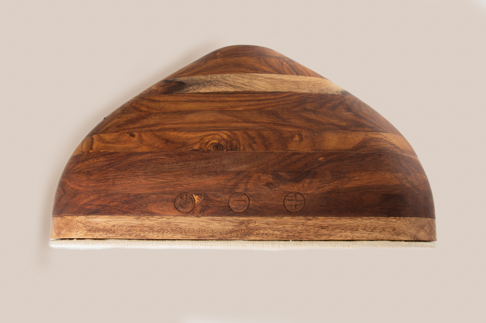
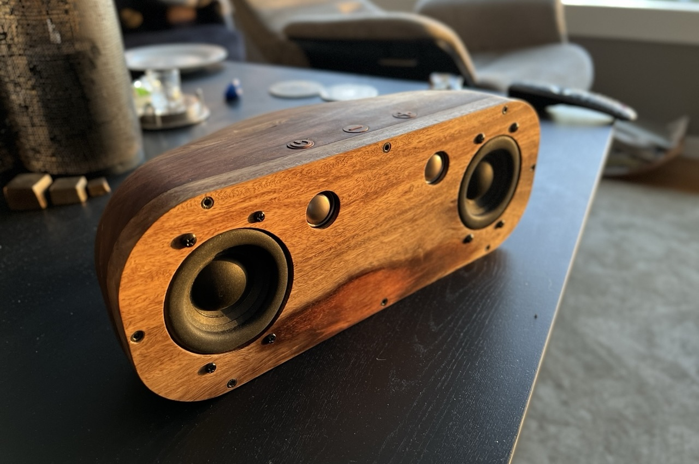
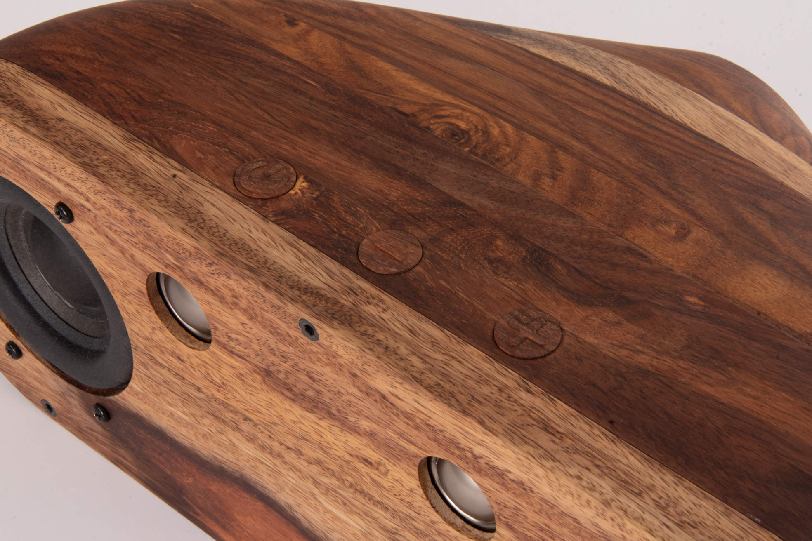
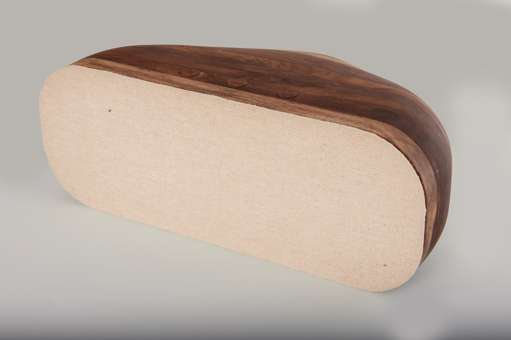
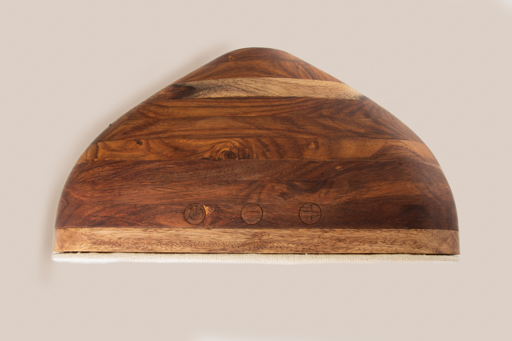
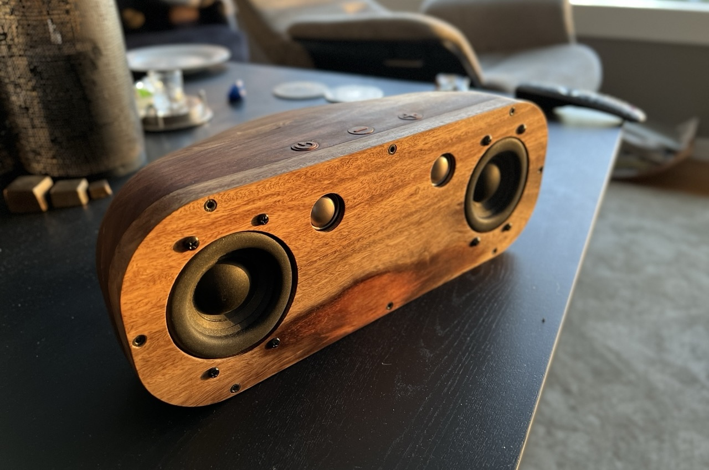

Woody is a speaker made of Indian rosewood, the material is also upcycled from a table. This was a project I had when I attended SKAP creative folk high school, and it was my first speaker project. The speaker is fully functional with buttons produced in the same material as the speaker. The shape of the speaker tapers backward, creating a seamless transition to the bass reflex tube at the back.
 







Construction process briefly summarized
The Material
The speaker is cut out of three different blocks made from planks from a table. This gives the speaker its unique surface, where you can see the transition between the planks.
CNC
Once again, CNC is the thing for making precision parts that need to fit together. Here you see the middle block section being cut out. The inside is machined out and then turned to cut out the outside of the part.
Assembly
After all the parts are cut out, they are glued together and later sanded to achieve seamless transitions between the three machined components.
The Buttons
The buttons for the speaker are also made of wood. Here, CNC is also used to create the icons in the buttons.

Speaker Front
Here you see the back of the front with the speaker elements mounted.

Before Treatment
The speaker is finally finished, and all that remains is to treat the wood.
Fabric Front
The fabric front is easy to attach and remove using magnets that attach to the screws that secure the front to the back of the speaker.